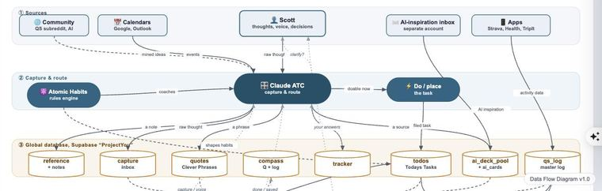
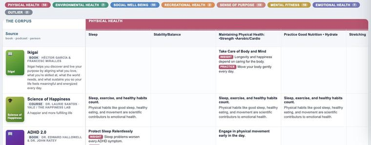
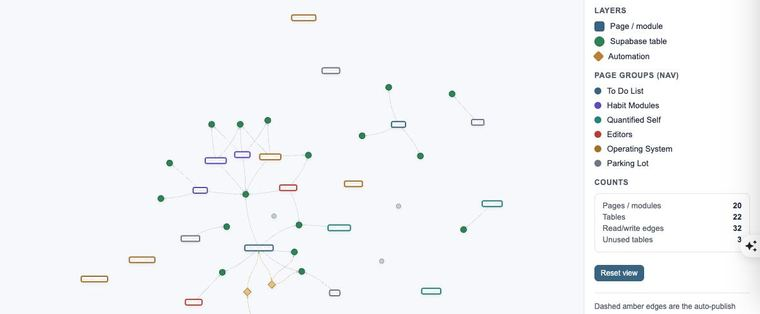
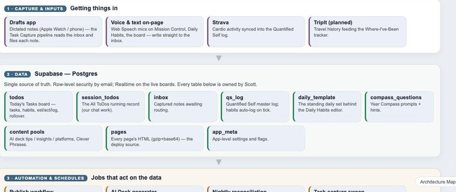

Data Flow Diagram
How a thought or signal enters the OS, how Claude routes it, where it's stored, and how it returns to you as something useful.
Open map →Five ways to see how Project YOU OS fits together, from the flow of a single thought to the technical architecture underneath.

How a thought or signal enters the OS, how Claude routes it, where it's stored, and how it returns to you as something useful.
Open map →
The systems map: every page and module and how they relate, the static blueprint of the whole operating system.
Open map →
Every page, module, and Supabase table as live nodes; edges are the real connections. Drag and zoom to explore the web.
Open map →
A layered “how it's built” view: the surfaces you touch, the engines behind them, the data stores, and the infrastructure underneath.
Open map →The live wiring, checked against the database: how Drafts, Strava, Supabase and GitHub actually pass data to each other, table by table. Click any box for what it holds and what breaks it.
Open map →